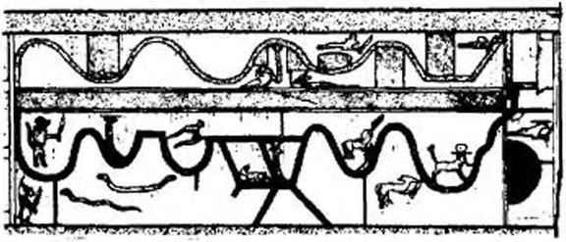
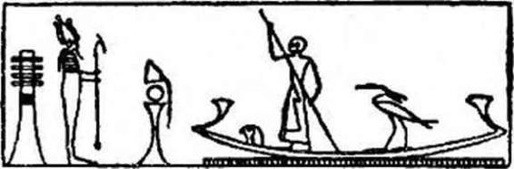
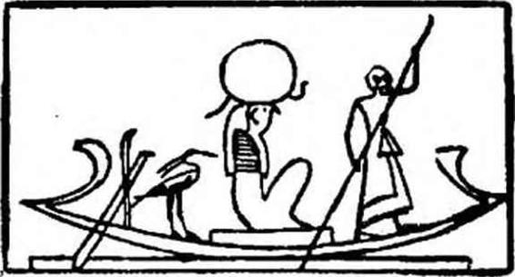

Şekil — 15
Douat dünyasının Mağara tanrıları ve aşağıda kendilerine yalnız Osiris önünde temize çıkanların tanıdığı Yukarı Bölgeler yasak olan kafası kesilmiş ölüler. - British Museum’ daki, The Book of the Dead. The Papyrus of Queen Netchemet’den.
ağzının bazı duaları ile, elini ayağını sağlığına kavuşturur.» Bu satırları Maspero'nun «Mémoire sur quelques Papyrus du Louvre : Louvre’daki bazı papirüsler hakkında not »da okuyoruz. Baştaki yedi delik ve karnındaki doğal delikler kutsal araçlar, ritüel sıvazlamalar ve bazı sihir formülleri sayesinde açılıyordu. A. Moret Rituel du Culte divin en Egypte : Mısır’da tanrısal tapınmanın Aylnleri’nde bu uzun seremoninin basitleştirilebildiğini yazar: Bazan skarabe biçimi verilmiş taştan veya metalden bir yürek, ağzın açılışından sonra ölünün kalbine konuluyor. Ölüler Kitabının Bab’larından biri okunuyordu. Bu ritler Rekhmara mezarındaki «Işık Saçan'ın kalbini bu kimseye getirmeyi, ağzını açmayı, tanrısal adaklarla ona biçimini vermeyi anlatan bölüm» adındaki bir yazıda toplanmış bulunmaktadır. (Ph. Vlrey, Rekhmara mezarı). A. Moret’nin «Mısır’da Tanrısal tapınmanın Ayinlerinden aldığımız tercüme edilmiş bölüm şöyledir: «yerine koymak için sana kalbini karnına getiriyorum. Horus’un kalbini anasına Isis’in kalbini oğluna getirdiği gibi.» Böylece, karanlıkların dibinde, ölü görebilecek, işitebilecek, teneffüs edebilecek, dinleyip, konuşabilecektir. Rahat ebediyetinde, ebedî efendilerinin arzularından kaçmamaları için bacakları olmayan dişi heykelciklerle cinsel zevkleri tadabilecektir.
TEMİZLENME SAHNELERİNİ TASVİR EDEN ABİDELER
Ağız ve gözlerin açılmasından evvelki temizlenme törenleri ekseri bize tarif edilmektedir. Teb nekropolünde Khonsu mezarının girişini gösteren bir anıtın önünde, hizmetkarların, üzerine sihir formülleri kazılmış bir mezar taşını diktiklerini görüyoruz. Mezar taşının önünde, bir heykel ölüyü temsil etmekte, ritüel leopar derileri giymiş cenaze rahipleri heykele saçılar (libations) yaparken, İki kiralanmış ağlayıcı kadın dövünmektedirler. Kurban edilmiş Typhon (Eski Mısır’ın «Thoubon veya Set-Slton adlı toprak - çöl tanrısının, (Osiris’in erkek kardeşi Seth’in Yunanca adı) hayvanı derisinin (yani leopar) rahiplerce giyilmesinin «cenaze kültünün en eski ritlerinden biri olduğunu» hatırlatalım (A. Monet). Bu deri ritinin genel anlamı, ölüyü mumyalama töreninde söylenen şu cümleyle tanımlanır: «Kalbinin ferahlaması için iyi ayinler, düşmanın Seth’in derisiyle iyi cenaze törenleri yapıldı», «kurbanın derisini giyinmek, kurbanın hassasını edinmenin en sağlam yolu sayılmıştır» (Lefebure, le Mythe Osirien: Osiris Mit’i). Sonraları, ölünün bütünlüğünü korumasına yardım eden mumyalamanın yerini, bir parça mide bulandırıcı olan ölüyü parçalama adeti aldı. Bununla birlikte cenaze rltüelleri, eski formüller değişmedi.
Yağlanma seremonisi sırasında bir okuyucu rahip, bir papirüs tomarından uygun duaları tekrarlar. Ölünün ağzını ve gözünü açma araçları önünde hazırdır. Teb mezarlarının duvarların- dakilere benzer resimlerin bazı sahnelerinin neyi ifade ettiğini yeterince anlayamıyoruz. Menna mezarında veya Mentou ker khesef’dekiler gibi. Teb nekropolünün bir mezarının girişini gösteren bir amt önünde, hizmetkârlar üzerine büyülü formüller yazılı bir mezar taşını dikmektedirler. Stelin (mezar taşının) önündeki bir heykel ölüyü temsil etmektedir. Bu heykelin önünde, kiralanmış iki ağlayıcı kadının feryat figan ağladıkları, ritüel leopar derilerine bürünmüş rahiplerin birinci ve İkinci dereceden libasyonlar (törensel serpmeler) yaptıkları görülür. Okuyucu rahip bir papirüs tomarından uygun duaları okumaktadır. «Ağız ve gözleri açmaya sembolik olarak yarayan araçlar yanma konmuştur. Bu kutsal metinler bize ne öğretmektedir? A. Moret «Osiris'in öldürülüşünden ve insanların ölümünden sonra, birinin ve öbürlerinin cesetleri dünyada kalıyor, oysa ruh gökyüzüne gidiyordu» diye yazar.
ÖLÜNÜN EMBRİON (ANA KARNINDAKİ ÇOCUK) HALİNE DÖNÜŞÜ VE KEMİKLERİNİN YERİNE GELİŞİ,
Kutsal hizmetlerden önce her ölü hareketsiz, çıplak ve terk edilmiş bir cesetten ibarettir. Tâbi tutulacağı ritler ondan mumyalanmış ve sargılara sarılmış bir «mumyalanmış Osiris, bir ölü- Oslrls haline getirecektir. Bu sözcük ölüler Kitabı'nın dualarında her an tekrarlanır. Arkaik dönemde (en eski dönemlerde) nekropollerin girişlerinde kendilerine ayrılmış köylerde yaşayan uzmanlar -bu dokunulmazların Nil'i geçmek ve yaşayanların köylerinde yerleşmek hakları yoktu- ölülerin iskeletlerinin ke-
miklerini ayırıyor, etlerini paralıyor, iç organlarını çıkarıyor, mumyalama işlemini yapıyorlardı. Bal karıştırılmış kokularla ovma, iskeletin ve etlerin bir araya getirilmesini kolaylaştırıyordu. İskeleti bir araya getirip etlerle kabil olduğu kadar, başka bir ölüden herhangi bir parça almaksızın, örtmek gerekiyordu. Kemikleri bitiştirmek ve bütüne, doğacak her varlığın ana karnındaki çocuk biçimini vermek de gerekmekteydi. Kemiklerin birleştirilme seremonisi herkese, Osiris’in ilk olarak, kemiklerinin Horus, Thot, Anubis tarafından birleştirildiğini gördüğünü hatırlatıyordu. Bu önemli olay bütün Mısır mabetlerinde tanrının omurgasını gösteren Tet sembolü dikilirken gösterişli ayinlerle kutlanıyordu. Daha sonra, vücudun tamlığını bozmayan mumyalama yöntemi, bu biraz gönül bulandırıcı olan iskelet parçalamanın yerini aldı. Fakat cenaze merasimleri sırasında söylenen formüller değişmeden kaldı.
«RÂ İNSAN BEDENİNİ GÖZÜNÜN AĞLAMALARI İLE YAPTI.»
Ölünün ruhu, hayatın ve ışığın ebedî kaynaklarına yükseliyordu. Bu serbest ruh ba idi; can (espirl); kd: «duble»; sekhem «şekil»; veya khabit, «gölge»; ren «isim»dli Ruh, gök tanrısı olan Horus’un gözü oluyordu. Fakat dikkat etmeliydi! Onu kovalayıp rahatsız etmek için ilk cehennemlerde, nefesi yeryüzünde yaşayıp, ölenlerden hiç ayrılmayan korkunç Seth’l karşısında buluyordu. Q. J6quier, Religion Egyptienne: Mısır Dini adlı yapıtında «Horus’un gözlerinin kalkanı altında ölü, devamlı yolculuğunu güneş gibi hep yeniden doğarak sürdürebilecektir» diye yazmaktadır. S. Mayassis’in yorumuna göre «Horus’un gözü kökenini güneşin ışığından alan, onunla birlikte var olan, bu ışıktan çıkıp onunla karışan ruhun ışığını simgelemektedir... Horus’un gözleri insanları ve eşyayı yaratmıştır. Semâvî yüzün gözleri evreni gördüğü zaman, evren vücut buldu; güneşin ışıkları bir gözyaşı dalgası gibi, evreni kapladı; böylece Horus’un gözünden dökülenler, İnsanlara ve tanrılara gerekil olan hayatı verdi... Güneşten dağılan ışık gibi, Horus’un gözü bütün realiteyi yarattı.» Böylece, dünyada yaşayanlar, ölmek için doğmuş yığınlarca varlık, Râ'nın gözbebeklerinden, ilk ve dölleyici ışıkla beraber fışkırmış-
tı; çünkü: «Râ insanların bedenlerini gözünün ağlayışları ile yaptı...» diye yazılmıştır. Mayassis «Her ruh gökyüzüne doğru uçar. Işıkta, güneşte ışınmaları canlıların vücutlarını yaşatan, yeri güneş olan tanrısal-evrensel ruhta eriyecektir. Evrensel ruhta eriyecektir. Evrensel ruh, ruhların ruhu, bütün yaratıkların hayat kaynağı, tanrısallığın ta kendisi, tanrıları yapan esrarlı ruh olup tannlar onun şekilleri ve tezahürleridir. Bu evrensel ruh, Horus’un gözüdür, ölü ancak, onu tanrılara eşit kılacak, onu ebedileştirecek sihirli akımı ona verecek, onu saflaştırıp hoş kokulu yapacak -Horus’un gözünün kokusu tanrıların kokusudur- bu ışık gözüne sahip olduğu zaman «ses’te doğru» diye nitelenebilir. Bunun içindir kİ cenaze rahipleri, ölünün de sırası gelince Işık Saçanlardan biri olması için, ölünün heykeline merasimle kokular sürerler. Okuyan şöyle demektedir: Ey ölü - Osiris, rahibin açtığı gözüne, Horus'un gözünün ışığını koyuyorum.. Ey ölü - Osiris, saçlarına Horus’un gözünün ışığını koyuyorum...» Moret’nin çevirisi şöyledir: «Ey Amon-Rû, senin için Horus’un gözünü hazırladım. Kokusu sana geliyor. Sana gelen Horus’un gözünün kokusudur, Amon-Ra, sen ki reçineyi seversin...» İşte semâvi kokuların yerini tutanlar: Mür (fr. Myrrhe; Lat. Commiphora myrrha.), mabetlerdeki tütsüler...
VI. BAB
İNİSİYELER İNSANIN ALTI ÂLEMDEN OLUŞTUĞUNU BİLİYORLARDI; ÜÇÜ MADDÎ BEDEN, İSİM, GÖLGE; ÜÇÜ RUHİ: ANKH, BA VE KA.
Mısırlılar, İki hafta boyunca ay küçülürken, Kötülük Ruhu Seth'in, siyah bir domuz şeklinde, gök yüzünde Horus’un gözünü yediğine İnanıyorlardı. Bir balıkçının koca karınlı, sedef renkli bir ay balığını (Môle, Poisson lune) yakalayışı gibi, Seth, bu gözü ağlarında yakalıyor, bu ölüler dünyasına egemen esrarlı gözü, su aygırlarına, Nil nehrinin derinliklerinden gelmiş ışık yansımaları gibi, sular boyunca sinsice kayan timsahlara atıyordu. Bunun içindir ki Mısırlılar, Osiris’in ruhunun, diğer ölülerinki gibi, Horus’un gözünde kayb olduktan sonra, mumyalanmış olan ve terk ettiği bedene, mumyalama süresince, Horus’un ruhunun başına gelenler gibi her çeşit maceraya tâbi olduktan sonra dönebileceğine inanıyorlardı. Bunun içindir ki, mumya mezarın veya mabedin zemininde dikine konulduğu zaman, rahipler, yani Horus, karısı İsis, kardeşi Nephtis, ayni zamanda Thot ve Anu- bis, ruhun saklandığı Horus’un gözünü aramaya koyuluyorlardı. Buradaki eski sırların anahtarlarını, bu sembollerin anlamını bilemiyoruz. Ne sihirli bir âleme kaçan bu ruhların dış görünüşlerinin ne olduğunu, ne de onları hangi karanlık veya aydınlık kuvvetlerin, sonu gelmez savrulmalar içindeki planetler gibi, uzaya dağılmış onbinlerce iyilik veya kötülük taşıyıcısı haline, seçerek getirmesini anlayabileceğiz. Bu «Horus’un gözünün aranılı- şı», bu ışığın aranılışı, ayini yöneten rahibin, karaciğeri ve iç organları Seth’in karaciğer ve iç organları Seth’in, kötülük ruhunun olan bir öküz veya ceylanı boynuzlarından yakaladığı za-
man sona eriyordu. İşte ölünün mumyası önünde, boynuzlu bir hayvanın kurban edilişini bize anlatan alışılmış sahne. Hayvan boğazlandığı veya karnı yarıldığı zaman, rahip sıcak karnını karıştırıyor, parlak ve kaygan iç organlarını, Horus’un sindirilmemiş tanrısal gözünü bulmak için muayene ediyordu. Çünkü ölünün ruhu bu gözde saklanmıştı ve ruhu, kurban edilmiş hayvanın iç organlarından çıkararak cenaze rahibi onu ölüye, daha docrusu mumyasına iade ediyordu. Ruhiyle beraber ona, gölgesini, şeklini ve ismini, adalet tanrılarının mahkemesine çıkmak İçin gereken bütün görünüşleri iade ediyordu. Ruhu bedenine «saymak», «Seth’in gözünü koparmak* denen şey buydu; çünkü Büyücü İsis, ilk kez, tanrısal ve cenazeyle ilgili kültün ritlerine uygun olarak, bıkmadan usanmadan Horus’un gözünü aramış, bulmadan hiç dinlenmemişti. Gözün, yani orada oturan ruhun kadavraya iadesi gösterişli ayinlerle yapılıyordu: Mumyaya bir kalp getiriliyor; heykeli ve gölgesi ona götürülüyor ve ölünün oğlu, ona hayatını aktarmak için, mumyayı veya heykeli iki eliyle kucaklayarak öpüyordu.
*
**
Zamanların başından beri Mısırlılar, Nil kıyısında hayatın çok kısa ve özellikle değersiz olduğuna inanıyorlardı. Kuşkusuz, çok akıllı meraklılar olarak «ebedî evlerinde» bulacakları avantaj, zevkler ve konfora değer veriyorlardı. Ancak tek gerçek yaşamın ebedî yaşam olduğunu da biliyorlardı. Bu yaşam onlar için, aşağıdaki dünyada ikinci kez doğuşları İle başlayacaktı. Çünkü, kokulu mumyalarından, annelerinin kamından doğmuş oldukları gibi, ölüler evreninin on iki kapısı arkasında o esrarlı, şekillerin iadesi süresi tamamlanınca, yeniden doğacaklardı. Ka’larıyle birlikte, yani dubleleri ile, görünüşten İbaret boş temsillere, değişimlere rağmen, ancak ölünün tanıyabileceği öbür benlikleri ile, vaktiyle doğmuş oldukları gibi, temize çıkmış bir ruhla doğacaklardı. Bu kâ, şekilleriyle birlikte onlara, dünyanın yumurtasını biçimlendiren Büyük Khnoum Kapıcısı tarafından verilmişti. İnisiyeler insanın altı elementten oluştuğunu biliyorlardı; üç maddesel: Beden, gölge ve isim; üç ruhsal: ankh, ha ve ba. Bu ba ebediyen sürekli, ölümsüzdü. Yaşayanların, dünyada gölgeleri
nasıl kendilerine yapışıksa, ka'da Douat’ın yalnızlık ve derinliklerinde böyle idi. Genellikle denilebilir ki her insan, doğan güneşin ışığını görür görmez, *Ka’sı ile yürür*. Kuşkusuz kimse bu öbür benliğini ne görmüş ne de ona dokunabilmiştir. Bu, ciğerlerini dolduran hava, bakışını aydınlatan ve sözünü canlandıran düşünce gibidir. Herkesin ruhunun ve bedeninin dublesi olan ka, şu veya bu şekilde dayanağı olduğu hayat kadar kıymetli idi. Güneşi ve dikilmiş phallus’ü alkışlayan ilk köpek başlı maymunlar tarafından dünyanın tanındığı ve tapınıldığmdan beri tahrip edilemez olanın gücüne sahipti. Bu ebediyen değişmeyen, ölüye sonraki hayatındaki devamlılığı sağlayan, görünmeyen varlığın

Şekil — 16
(İKİ YOLUN KİTABINA GÖRE RO-SETAOU'NUN HARİTASI). Burada öbür dünyanın bölgelerinden birini görüyoruz. Ro - Se- taou’da yılankâvi iki yol vardır. Aşağıdaki ateşten, yukardaki sudandır ve birbirlerinden Ateş Gölü ile ayrılırlar. Kapılar, canavarlar, kötü ruhlar, ruhun Ro-Setaou’daki ilerleyişi sırasında aşması gereken engellerdir. Ruh aşağı dünyanın bu bölgesine eli bıçaklı bir tanrının bekçilik ettiği Ateş Kapısından (sağdaki siyah yarım daire) girer. «Gizli Şeylerin Yolu» olan «yolunu Ro-Se- taou’da« açmalıdır. Ancak, kendini Ro-Setaou'da bekleyen zorlukları aştıktan sonra ruh, sağda, yukardan, çıkabilir. Pırıl ptnl, saflaşmış; ebediyette doğar; «Büyük olacak. Işığını kendi yapacaktır«; Gizli Şeylerin ne olduğunu bilecek, ancak isimlerini hiç tekrarlamayacaktır. Nihayet. Anru-tef bölgesine, mutluların bölgesine girebilecektir.
değişimlerini birbirine ekleyen ve ona bir kardeş gibi benzeyen ka’yı, her yerde mezarlarda küçük heykelcikler şeklinde buluyoruz. Canlılar ona yalvarmaktan geri kalmazlar, çünkü o çok kuvvetlidir: ölüye «Ka’n yaşasın, derler; Teb'i severek ve yüzün kuzeyin esintilerine dönük, milyonlarca yıl yaşa.»
Henri Frankfort'un özellikle dikkati çektiği gibi, her ne kadar «bütün tercümeler, fikirlerimizin geçerli olmadığı bir alanda, kendi görüş açımızın etkilerini taşırsa da» ilerki açıklamayı doğru sayabiliriz: Eski Mısırlıların ka’sı, İster canlı, ister ölü olsunlar, onların, gezegenimizin bir bölümünü oluşturduğu kozmosun durmayan hareketi ile bütünleşmelerini sağlıyordu; bize alt olamayan bu (ben), bu ka, bu dünyadaki ve öbür dünyadaki her doğumda verilir ve, zamanların başında onu, tarif edilemez zamanlar için, meydana getirince, geldiği evrene iade edilmek için geri alınır. Ka, Eski Ahit (Tevrat)daki nephesh, espri-hayat, insanın yücelttiği, her gün ululadığı koruyucu ve transandantal Jen’i; melektir; çünkü insanın kalbi ka’sı ile sevinç içindedir»...
BENNOU KUŞUNUN OSİRİS’İN RUHUNU TAŞIDIĞI GİBİ, ÖLÜNÜN KUŞ - RUHU ONUN RUHUNU TAŞIR.
Ruhlarına gelince, Mısırlılar onu, ölüyle ayni yüzü taşıyan bir kuş şekli altında gösteriyorlardı. Ölüm anında bu uçucu ruh, geçici olarak ka’sından, yaşamından ayrılmış bedeni terk ediyor, mastabaların (arkaik mezarların) kuyularından kaçarak alışık olduğu yerlerde dolaşıp duruyordu. Onu Nü kıyısındaki bahçelerde, firavun incirlerinin dallarında görmek kabildi. İlkel arzularını hatırlıyordu; fakat her zaman düşünüp, değerlendirip karar verebiliyordu. Zihni açık, hareketli ve gelişigüzel, ritüel saflaşmadan sonra kendisinin olacak bu acayip dünyada dolaşıyordu. Fakat cennet mutluluklarına aday olan bu ruhu beslemek, takdimelerle doyurmak gerekiyordu. Çünkü öbür dünyadaki yaşamı canlıların ona sağlayacakları maddî ilgiye ve onların şefkatine bağlıydı, ölülerin ruhlarına karşı görevlerini o kadar çabuk unutan canlılara yazıklar olsun! Muskaların kalitesinde veya
ölülere verilmesi gereken yiyeceklerde hasislik edenlere yazıklar olsun! Evet, Batı Dağında kaybolmuş olan ölüleri artık hatırlamak istemeyenlere, kapılarının önüne atılmış sihirli çakıllar gibi, üç defa lânet olsun ; çünkü ölülerin aç kalmış ruhu kendi evine dönebilir, onları beslemekle yükümlü olanları, nesiller boyu, korkudan bar bar bağırtabilir! Evet, unutulmuş ölülerin çakal - tanrı olduğunu görenlere, gecenin sessizliğinde şikâyetini haykıran, Nil’in öbür kıyısından gelmiş büyük kuşu, Osiris’in ruhunu taşıyan bennou’yu, kadavraların üzerinde süzülen, mumyasına kavuşmak için mezarının kuyusu üzerinde uçan bataklıkların kuşunu, ölülerin İnsan başlı, insan elli güzel kuşunu görenlere ne yazık...
ÖLÜLER DÜNYASININ COĞRAFYASI
Mısırlılar, ölüler dünyasının İçinde yaşadıkları dünyaya, yani Mısır’a benzediğini düşünüyorlardı. Otuz kilometrelik tarım yapılabilir bir şeridin ortasında akan uzun bir nehirle bu alt dünya, Douat dünyası, firavun Mısır’ı gibi on iki bölgeyi içine alıyordu. «İkili Zambak ve Papirüs Krallığı«nda on iki nom veya eyâlete ayrılmıştı. Douat'ın on iki bölgesinin herbiri gecenin on iki saatine tekabül ediyordu. Birbirlerinden, kuyrukları üzerine dikilmiş, ağızlarından ateş saçan, zikzaklı geçitlerde saklanmış yılanların, şüpheli ölülerin kendilerini atlatmaması için dikkatle nöbet bekledikleri yüksek kapılarla ayrılmışlardı. Bunun içindir kİ Ölüler Kitabına, Kapılar Kitabı da denir.
Aşağı dünyanın bu on İki bölgesi sayısız tanrı, ruh ve sıradan ölülerden oluşan bir halkı barındırıyordu. «Ebedî hayatlarını Osiris veya Ptah nezdinde geçirenler hiç bir pozitif işkenceye uğramıyorlar, ancak karanlıklarda bir çeşit uyuşukluk İçinde sararıp soluyorlardı. O halden onları kurtaracak, kayığın yaklaşması idi. (Güneş Kayığı Douat’ın on iki bölgesinde gece yolculuğunu yapıyordu) Kayık onların bölgesine girince alkışlıyor, kayık onları aydınlattıkça canlanıyorlar ve saat geçince, aydınlık da Kayığın kayboluşu ile sönüyor ve onlar inlemeye başlıyorlardı.« (A. Moret, Egypte pharaonique : Firavunların Mısır’ı; Maspero, Hypogées royaux: Kral Mezarları.) Bütün ruhlar talihsiz değildi; sihirli formülleri bildikleri için Güneş Kayığına kabul edilenler, Râ’ya gece seferinde refakat edebiliyorlar, ve Râ günün İlk saatlerinde canlanınca onunla birlikte parlayabiliyorlar, birlikte Mısır’ın ebediyen mavi gökünde yükselebiliyorlar, onun yüzü ve ışınması olabiliyorlar, Güneş’in ebedî düşmanı Vadi Engereği Apophis’le savaşırken ona yardım ediyorlar ve her akşam yeniden yeşil yüzlü ölülerin yer altı dünyasındaki ağır geçişinde ona katılıyorlardı. Douat’ın derinliklerinde, tanrısal kayığı, Râ,’- nın önünden ışık düşmanlarını kovmakla görevli tanrının simgesi canlı bir boa yılanı olan bir iple yedekliyorlardı.
DOUATIN KİTABININ ON İKİ SAATİ.
Bize ölüyü, gökün yıldızlarına açgözlülükle atılmakta olarak gösteren Ölüler Kitabının bu bölümleri ne kadar gariptir! Bütün bu ölüler, beşer yüz senelik adımlarla evrene girebilmekten, her boyutta gezip dolanmaktan ne kadar mutlu İdiler! Gerçekten Teb soylusu, yaşamındaki Teb’ll ve soylu, birden kutsal yazıları mı öğrenebiliyor, sonsuzlukta raslantı sonucu yakaladıklarının İç organlarının Pişiricisi mi oluyordu? Çünkü Piramit Metinlerinde «ölüler gecenin kazanlarında karınlarını doldururlar» diye yazılıdır. Ölü aniden, aldırmaz tanrıların önünde «Kuzey Gökünün Büyüklerine» eşit mİ oluyordu? Maddenin maddedekine sahip olduğu gibi, bundan böyle, yukardaki ve aşağıdaki tanrıların zekâsına sahip olan, yaratıcı ışıkta, çoğalmak için şekil alan her şeyin derinliklerinde canlıların düşüncesinde ve gözünde Mısır’ın üstünde parlayan yıldızlar gibi ölümsüz mü oluyordu? Cennette, şu göğsü şişkin akbabada semâvî anasını tanıyabilecek, yanında, dünyadakinin tersine, yeniden ve ebediyen, hiç sütten kesilmeyen bir çocuk olabilecek mi idi? Ölülere vaad edilmiş bütün bu vizyonların sihri açıklamaları, gerçek anlamları ne idi? Piramit metinlerinde, ölü olanların «bir gün kendi pisliklerini yemeğe mecbur kalacaklarından korkmamaları, çünkü aralarına karıştıkları tanrılar arasında yiyeceğin, ekmek, et ve biranın bol olduğu» belirtilmektedir. Piramit tekstlerinde, ölüleri geçiren kayıkçının onları kayıktan indirdiği zaman, onlardaki saflığın pa- rıltısı artacağı, az zaman içinde Osiris’te kişiliklerini bulacakları, Osiris gibi azalarının yeniden birbirine ekleneceği yazılıdır. Bu konuda Ölüler Kitabı kesindir: Herkes o zaman (öbür dünyada) kalbine, akima, ağzına, ayaklarına, kollarına ve erkeklik uzvuna sahip olacaktır.» Evet, Ölüler Kitabının bu bölümleri acayiptir... Güneş Kayığının ölüler ülkesindeki gece yolculuğunun hikâyesini dinleyelim: Douat'ın Kitabının, birinci saati -gecenin birinci saatidir- ölüler cehennemin bekçisi olan yılanın ateşi arttırıp şiddetle püskürttüğünü görerek dehşete kapılacaklardır. Eğer ölüler becerikli İse, koruyucu muskaları varsa, sihirli sözcükleri biliyorlarsa, Aşağı Dünyanın üç başlı canavarının dikkatini dağıtacaklar, canavarın düğümleri arasında kendilerini dokunulmaz kılacaklardır. O zaman Batı Kapısından öbür dünyanın ilk bölgesine gireceklerdir. İkinci ve Üçüncü Saatte, ruhlar dünyasının kapısı olan Anrutef'den geçecekler, Ouernes ve Osiris bölgesinin soğuk alanlarını keşfedeceklerdir. Yaşayanların, daha hayat nefesi taşıyanların derileri beyaz olup hiç yeşil olmayanların sınırı Batı’dan gelen koç başlı güneşi selamlayacaklardır. Ölüler, bir kadavra olmuş, aşağı dünyanın on İki bölgesinde, Gecenin Kayığındaki yavaş yolculuğuna başlamak için, Gündüz Kayığını terk ettikten sonra, (kendi bedeni) olmuş güneşi, zamanların başından beri her gün yaptığı gibi, sfenksin bakışı altında doğmadan evvel, selamlayacaklardır. Dördüncü ve Beşinci Saatte, Doğrular, Güneşin, Memfis nomunun şahin yüzlü eski ölüm tanrısı Sokaris’in gizli mağaralarından geçtiğini göreceklerdir; orada karanlıklar, denizlerin derinliklerindeki sular gibi koyudur ve Râ orada olanları görmez; bununla birlikte çamur gibi kaygan olan ölüler, o emirlerini verdiği zaman sesini işitebilirler. Kutsal Kayık, Sokaris’in karanlıklarında kayar ve bu cehennemlerin korkunç gecesinde, hemen hemen görünmez uzun bir yılana dönüşür. Altıncı Saatte, binlerce kuş-ruh. ellerinde Horus’un göz bebeklerini tutan acayip tanrıçalar göreceklerdir. Skarabe Khepri’yi, hançer taşıyan beş başlı yılanları göreceklerdir. Yedinci Saatte ölüler, şeytanlara karşı haklı kızgınlıklar içindeki İsls’in karşısında olacaklardır; Osiris’in düşmanlarını kafaları kesilmiş, aslan başlı tanrılar tarafından bağlanmış; yeryüzü göklerinin tersini; yapışkan halkaları ile cehennemin yedinci dairesini dolduran, ilerlemesine mani olmak için Güneş Kayığının altındaki suları İçen Apophis canavarını göreceklerdir. Sekizinci Saatte, neş'elenmiş ölüler, yeraltında yapılmış olan evlerinden Güneşi övmek ve parıltısını görmek için çıkan dirilmişlerin gürültü ve miyavlamalarını duyacaklardır. Dokuzuncu Saatten Onbirinci Saate kadar, metinlerin Agarit dediği cehennem dünyasının su ve ateşini göreceklerdir; kürekçiler o zaman, Güneş Kayığını terk edecekler ve esrarlı mağaralarına döneceklerdir. Gece yolculuğu sırasında kayığı çekmeye yarayan halat bir yılan olacak ve bir skarabe güneşe konacaktır. Nihayet, On İkinci son Saatte ölüler, yaşayanların dünyasını ışığa boğmadan, Güneşin bir skarabe olarak doğduğunu göreceklerdir. Noult «bacakları arasından çıkıp havsalasının (Pubis; aşağı karın) dışında gözükecek yeni güneşi doğuracaktır». O zaman ölüler sevinsinler ve canlılar onun ışığını görmek için kalksınlar; çünkü cehennemin bağrındaki ölüler güneşi, yeniden Khepri, Sabah Güneşi tanrısı, insanların gürültüsü dindiği zaman bazan yerden gürültüleri işitilen Aşağı Dünyanın on İki bölgesinde o kadar sıkıntı ve değişimden sonra, kendi kendinden doğan yeni tanrı olmuştur...
...VE ÖLÜLER OSİRİS'İN IŞIĞI OLACAKLAR.
Başının üstündeki o kadar tatlı, o kadar saf, uçsuz bucaksız Afrika gecesini her seyrettiğinde, Mısır’ın ister Abydos ister Teb’ inki olsun, o harika gökünde bakışları dolaştığı zaman, firavunlar döneminin Mısırlısı biliyordu ki parlak yıldızlar ruhlardı veya tanrılar haline gelmiş ölülerdi ve kendisi de, bir gün o da, uzayda asılı bir ışık parçası olacaktı. İnisiyeler bir gün Osiris’in bedeni ve ışığı olacaklarını, diğer canlıların, onlardan çok sonra, zamanların karanlıklarında doğduklarını görmüş olan bu aynı Nil’in kıyılarında, büyük gök mezarının dibinde ışık saçan kendi ölülerini tanıyacaklarını biliyorlardı. Evet, bu parıltıları birbirine denk olmayan on binlerce yıldız, ruhlar tanrılar ve ölülerdi. Eski zamanlarda, İnsanların toprağını terk etmişler ve şimdi bu ruhlar, bu tanrılar, bu Ölüler yüzlerce milyon saman yolunun bur- gacına, insan düşüncesinin ebediyen kavrayamayacağı, yaşayanların evrenini kendi kendine hatırlayacak bir ayna sadakatiyle yansıtacak çok geniş ölüler evreninin şaşılacak âlemine iş- tlrâk ediyorlardı. İnisiyeler biliyorlardı ki Râ, ayrıcalıklı ruhları kendine çağırıyor, onları etrafında istiyor, onları kendinde bir tohum gibi arzuluyordu. Çünkü yeryüzünde azıcık bir şey sayılmış olan hayat, mezarın kapıları mühürlenir mühürlenmez, yeniden bir güneş ışığından çıkmış İlkel akım haline geliyordu. Yeni doğan, bedenine güney güneşinin ışığını almıştı. Ölümden sonra bu ışık ebedî tanrısallığa, ışığın kaynağına, alev alev kursu insanların toprağında piramidionları*, mabetlerin büyük kapılarını aydınlatan Ra’ya dönmeliydi. Zaten insan mevcudiyeti hiç Râ'nın mevcudiyeti İle karşılaştırılabilir miydi? Ünlü ejip- tolog A. Erman şöyle yazar: «insan doğuda doğmuştur, batıya doğru gider. Ölümünden sonra ölü, güneşin gece bölgesindeki ilerleyişini, doğudaki ilk noktasında bulunmak, ulûhiyetle birleşmek ve ebedi ışığa girmek İçin izler»; ölüler batıdan doğuya giderler; metnin esas teması budur. Cenaze mabetleri ve mezarların niçin Nil’in batı kıyısında İnşa edildiğini de böylece anlamış oluyoruz: «ölüler ülkesi batıda bulunur, bunun için güneş de batıdan batar.»
* Pyramidion: Üstü bir dikili taşla nihayetlenen küçük piramit.
FİRAVUNLARIN CENAZE SARAYLARINDA SEMBOLLERİN, ANAHTARLARIN VE GÜÇLERİN ARAŞTIRILMASI.
Uzun koridorlardan, ülkelerinin eşiğine kadar indiğim zaman ölülerin tanrılarını gördüm. Bana refakat eden tanrıların oturdukları bu yerde ne korkunç saatler... Bu unutulmuş ve az bir zaman önce bulunmuş derinliklerdeki rahatsız edici sessizlik... Ünlü sülâlelerin firavun mezarlarının duvarlarına resimleri yapılmış bu aşağı dünyanın başı kesilmişleri, bana, benden hızlı yürüyorlarmış gibi geliyordu! Douat’ın öldürücü yaratıkları her yönden üstüme koşuyorlardı. Doğrulara vaad edilmiş cennetin yüksek kapıları önünde, tanrıların ve insanların dev resimleri önünde dehşete kapılmaktan kendimi alamıyordum ve ruhumu onca sun'ilik, onca ululuk karşısında nasıl koruyacağımı bilemiyordum. Kendimi hiç bir canlının kıyılarını görmediği, XX. yüzyılın hiç bir ölüsünün, kapılarının önünde açıldığını görmediği bir âlemin ortasına atılmış küçücük bir şey gibi hissediyordum. Nerde o yıldızlar haline gelen bu ölülerin dünyasını anlayıp ona egemen olmamızı sağlayan o semboller, anahtarlar ve güçler? Sağımda ve solumda olan, Osiris’in korkunç habercileri, inisiyeler için gerçekten korkunç mu idiler? Ölüler, İalou tarlalarındaki neş’eleri için, sonsuzluklardaki ululanmaları için ne ücret ödeyeceklerdi? Cevap her zaman aynıdır; çünkü, «orada ölülerin nasıl oldukları, eksiklerinin ne olduğunu anlatmak için ve sıramız geldiği zaman ölülerin gittiği o yerlere gittiğimizde korkularımızı yatıştırmak için hiç kimse oradan dönmemiştir. Gittiğinden beri birkaç bin yıldır hiç kimse oralardan dönmemiştir.» O tavanları mavi zemin üstüne konstellasyonlarla ve

Şekil — 17
Semdvi Nil'e »Maat’ın Işıklı Gölü»ne ulaştıktan sonra, saf olan ölü, Güneş Kayığına biner -burada Kayığın bu karakteri Ho- rus-Ra'nın başı ile belirlenir- ve Doğuya, ölümsüz yıldızlara yönelir. Tanrıların yaratıldığı yere Kamış ve Adak tarlalarına doğru, Mutlular'ın tarlalarına doğru gider. Arkasında yeniden dirilişi simgeleyen Bennou kuşu, ona refakat eder ve onu korur ve ölünün ruhu, «Geb Kazı gibi, sevinçten gakgaklar». Osiris’in Işıklı Sandalı ve »dayanıklılığı, ruhun sürekliliği, Osiris'in omurgasında olan» Djed direği. - Torino Papirüsü'nün CXXIX. Bab ındaki vinyet.
astronomik tablolarla süslenmiş «Altın Salonlar», o heykelleri kaybolmuş serdablar, o geniş ve ıssız ölü mahzenleri, duvarlarında ölüler Kitabı’nın önemli bablarının kopya edildiği, yaşamlarındaki gündelik sahnelerin resimleri yapılmış olduğu bütün bu gizil ve korkunç yerler, bir defa gören İçin unutulmaz şeylerdir.
Orada, mezarın özel yerine inişten evvel, rahipler mumyayı son defa ayağa kaldırırlar ve ağlayıcılar ona sarılırken rahipler ağız ve gözlerin açılışının imitatif (taklidi) büyü ritlerine başlarlar. «Ruhun, bedensizler (Esprits; ruh: Ame) arasında tanrısal olacak, diye şarkı söyleyecekler ve sen onlar arasında sık sık dolaşacaksın. Gözlerin görmek için, kulakların ağzından hangi lâkırdı çıkarsa duymak için; bacakların yürümek için sana iade edildi; kolların da omuzların üzerinde her yana hareket edebilir. Etlerin şimdi canlıdır; damarların sevinç içinde; bedeninin bütün organlarından faydalanabilirsin; çünkü bedenin tam sağlıklı ve kuvvetlidir.» (A. Moret) Leopar derisi giymiş rahipler, kumlar altında kalmış küçük dua odalarında sihirli duaları mırıldanmaya ve ölülerin gereksinmeleri olan hediyeler vermeye artık hiç gelmeyecekler. Duvarlarında hatta bazı tamamlanmamış resimlerden başka bir şey kalmamış o güzel «Ebediyet sığınakları» bugün ne kadar ümitsizce boş... Artık rahipler ölüleri «sesleriyle çıkarmak» ve onlara sundukları «yiyeceklerle ağızlarının suyunu akıtmak İçin» gelmiyorlar. Gökyüzü ziyafetlerinin güzel müzisyenleri, açık saçık giyinmiş, ölüler önündeki genç dansözler, Nübya prensleri tarafından hediye edilmiş küçük zenciler, neredesiniz? Artık, nom evinde değil; heykeller de yok. Yalnız ölülerin ruhu Osiris’te ebediyen canlı kalıyor...
ÖLÜLERDEN VE ONLARIN BAKIMLARINDAN YAŞAYAN BİR SANATKÂRLAR VE HİZMETKÂRLAR ORDUSU
Bir an İçin çalışma odanızı, sayfaları işaretler ve düşüncelerle dolu kitapları bırakalım ve otuz beş yüzyıl geriye sıçradığımızı farz edelim... Nil kıyılarında, yüz kapılı Teb’deyiz. Amon'un büyük şehri etrafında palmiyeler, geniş ekili alanlar, san’atkâr ve hizmet köyleri yayılıyordu. Çünkü ölülere hizmet sağlamak için, ünlü Teb nekropolünün çevresinde, yağlı bir parlaklıktaki İç organları çıkaranlardan, mumyalara sargılar sarıp 104 muskayı, Osiris’in ritlerindeki tarife göre, uygun yerlere koyanlar- dan, yaşayanların şehrine girmeleri yasaklanmış mumyacılara, sam rütbesindeki rahiplere, duvarları alçı ile sıvanmış «altın salonca konmadan, yüksek düzeydeki kişilerin üç kat tabutunun konduğu katafalkı taşıyan hamallara kadar, sayısız görevli vardı. Kutsal hayvanlar şeklindeki cenaze yataklarını, efendilerinin mezarına meyva sepetlerini, tanrısal üçlüyü simgeleyen, şeffaf kaymak taşından yapılmış üç lotüs şeklindeki lambaları, kamışa sarılmış, Osiris’in önündeki dirilme saatinde ağızları açılacak gümüş boruları; ketene sarılmış kutsal kazları, yeraltı sulan üzerindeki cenaze kayığında kullanılacak sihirli kürekleri, ince altın plaklarla örtülmüş tahtadan Anubis heykellerini; Horus’un dört oğlu ve kutsal kobralarla korunan ve İçine o ünlü ölülerin bar- sakları, beyinleri ve karaciğerleri muhafaza edilen dört vazonun konulduğu çekmeceleri taşıyan hizmetkârları da sayalım. Firavunların ve karılarının cenaze saraylarına çıkılan vadilerin eteğinde, halk tabakasından binlerce kişi, mezarların bakımıyla geçiniyordu. Kendilerine belli bir ücret (kirâ) karşılığı tevdi edil miş ölülerin bakımına dikkat ediyorlardı: ölülere muntazaman yiyecek, çiçekler, buhurlar, onlara verilmesi gereken kurbanlar taşınıyor, ve belli zamanlarda temizlenme törenleri yapılıyordu. Ayni zamanda yardımcı araçları sağlıyorlar, ölüler yerlerine bırakıldıktan sonra, taze alçı tabakası üzerine nekropolün resmi damgasını basarak bu dünyanın son kapısını mühürlüyor] ardı. Yeni kazılmış mezarın; topraklarıyla ustalığı ve cesareti ne olursa olsun, hiç bir hırsızın mezarın yerini bulup, öbür dünyada Ölünün, ebedî olduğu kadar rahat bir hayat da sürmek için birlikte götürdüğü hazînelerin kalitesini ve bolluğunu tahmin edememesi için çıkış koridorlarını tıkıyorlardı. Sessizlik ve karanlıkta korkunç, cenaze odasının doğusundaki salonun tek nöbetçi olarak yatağına uzanmış Anubis'in önünde, korkmuş hizmetkârlar, batıya bakan, Batı tanrıçası Hathor'u simgeleyen Gök İneği’nin başını yerleştiriyorlardı. Böylece ölünün arkasından bütün kapılar mühürlendiği, semboller yerli yerine konulduğu, her şey toprakla örtüldüğü zaman esrarlı bir dünya, yavaş yavaş ölülerin önünde açılıyordu. Vaktiyle, onlar doğmadan çok evvelleri onlar için yaşayan dubleleri aracılığı ile, karnı konstellasyonlarla parıl pani, tanrıça Nout'un kendilerine doğru geldiğini göreceklerdi. Ellerini ona doğru uzatacaklar, uzayın boşluğu kadar tanımlanamaz olan ebedî yaşamın su ve ateşlerini alacaklardı. Böylece ölüler, güneşin çıktığı firavun inciri ağacını gördükten sonra dirilecekler ve bu şekilde yıkım görmez gezegenlere yöneleceklerdi; Ölüler Kitabı'nda, bu böylece yazılıdır.
«IŞIK GİYSİSİ» VE OSİRİS'İN SAKALI
Canlıların kentine o kadar yakın olan bu ölülerin Teb Topraklarını bir defa olsun görmüş bulunan hiç kimse artık hiç unutamaz. Parlak sabahların serinliğindeki gökyüzünün şeffaflığını, nehrin tekrar normal akışına kavuşmak için, genç güneşin Libya dağlarını aydınlatmasını, yerin sıcaklığının yenilenmesini, yeni bir gökyüzünün ışıl ışıl kubbesinde bir şarkı gibi hareketsiz görünmesini hatırlayacaklardır... Mezara konulmadan evvelki rltler nelerdi? Carter’in buluşları sayesinde bunu etraflıca biliyoruz. Kadavra, hazırlayıcıların işi bitince, mumyalama bittikten sonra, ölünün bedeni beyaz keten şeritlerle sarılıyor. Bu şeritler Aranyaka - Upanishad’ın, Orfe ve Pitagorcuların evreni gibi, hayat akımı ağını simgeliyordu. Bu şeritler, bu «ışık giysisi» bir kuluçka ve canlanma dönemi olan ölüm uykusundan sonraki dirilişi de simgeliyordu. Ne mücevherler, ne de muskalar unutuluyordu. Toutankhamon’un boynunda bunlardan üstüste konmuş sekiz kat bulundu. Mumya mezet boyaları, bayram kokusu. safi yağı, alkış kokusu, khnoum yağı, toua yağı, sedir esansı abi- ro pudrası, Libya esansı ve baq yağı ile kokular sürülüp yağlanıyordu. Çenenin altına da Osiris sakalı konulması ihmal edilmiyordu.
ÖLÜLER «GÜZEL BATIYA DOĞRU » GİDERKEN.
ölüler binlerce yıldır onlara ayrılmış kente, ölülerin Teb’ine giderken ne akrabaları, ne hizmetkârları, ne de GÜZEL BATI’ya doğru onlara refakat eden ölünün yakınlarının içinde bir üzüntü
vardı. Rahiplerin, göğüslerini açmış, kiralanan, başlarına kum serpen ağlayıcı kadınların ağıtlarını dinleyerek yürüyorlardı ve herkes sevinçle Ey Amon! diye bağırıyordu. Onlar, aşağıdaki karanlıklarda kaybolacakların, Semavî Nil’in kıyılarında onları bekleyen sevinçleri de tadacaklarını, ölülerin uygunsuz ve değersiz İşlerini yapmak için onların yerini küçük sihirli heykelciklerin alacağını biliyorlardı. Uzun ve kaygan hayvanların kıvrıla kıvrıla yürüdüklerini, öbür dünyanın gösterişli görüntüsü arasında, işsiz güçsüz tanrıların onlara avuç avuç Horus’un gözlerinden dağıttıklarını görünce hiç korkmayacaklar; korkusuzca, bir ümit arayan isimsiz şekillerin kaynaştığını, cenaze cinlerini taşıyan yılanları; birbiri ardından herbiri, güneş gece yolculuğunda iken yalnız birer saat aydınlanan alt bölgelerin on iki bölümünü seyredeceklerdir. Kimsenin anlamını kavrayamadığı acayip sözler söyleyen köpek başlı maymun yazıcılara, güneş ka-

Şekil — 18
Ölü Güneş Kayığını kullanıyor. METİN : *Tiaou’yu, alt dün- yayı terkettim ve şimdi Kutsal Kayığın pruvasında, ayaktayım, Ben kendisine şöyle denenim: sükûnetle git, Ey ölü Osiris, Ra’- nın Kayığında; rahatça yolculuk et. Işığın sonsuz aydınlığında Güneş Kursuyla, Maat gibi birleşmeden, rahat rahat git; *Ey ölü Osiris> denilenim. -Râ’nın gerisinde zaman ve ebediyet sürdükçe, sonsuzcasına kendini yaratan Osiris'in evrensel ruhunun simgesi Heliopolis’in Bennou kuşu. - Lepsius, Todtenbuch der Aegypter.
yığını yedeğe almış insan başlı kuşlara, koç başlı skarabelere, dünya yumurtasının içine kayan mumyalara, tek. başlarına güneşler taşıyarak yürüyen vücutsuz kollara sürünüp geçeceklerdir. Cenaze saraylarının duvarlarına yapılmış bütün bu fantastik hayallerin resimleri onlar için huzur verici olacaktır; çünkü yalnız olmayacaklarını, öbür dünyada aslâ yalnız kalmayacaklarını bilirler. Pound barbarlan (Eski Mısırlılarca Arabistan ve Somaliye verilen ad) ve dünyanın başka yerlerinde olanlar gibi, derinliklerinden hiç bir ses, hiç bir ışık gelmeyen ölümün korkunç ıssızlığında çıplak ve yalnız kalmaktan korkmuyorlardı.
Bu Teb mezarlarının resimleri sadece yeraltı bölgelerine doğru inişi göstermez, ölüler için mutlu bir ebediyet, hazır bir konfor, hatta belli bir lüks vardır: hizmetkâr kadınları, kâtipleri, kaymak taşından kaplarda sunulan kızarmış kazları, bira ve şarap dolu kapları, ut (sistre: Eski Mısır’da kullanılan bir çeşit ut) çalan kadınları, kayıklar ve arabaları olacak; kendileri ve dubleleri onları ezmeye sinsice çalışan kötü ruhların meydana getirebilecekleri hastalıklardan ve ölümden koruyacak muskalar takınacaklar; ölüler bayramı sırasında, Neschmet’in kayığında yerleri olacaktır. Kuşkusuz, eski ataların zamanından beri, yeraltı bölgelerinden, gördüğünü, işittiğini, çektiğini anlatmak için hiçbiri geri dönmemiştir. Hiçbiri, ölülerin gittiği yere gitmekten sevinç duyabilmesi için bir canlının korkudan kurtulabilmesini sağlayamamıştır. Ne kadar güçlü, ne kadar tanrısal olursa olsun, bizzat firavun bile, ölümü felâket olarak adlandırmaya cesaret edebilmiş. Teb tanrılarına hediyeleri ve buhurları, 15 Ağustosa doğru ve Douat’ı örten Nil’e, «saf suyun» beklendiği, suların taşıp vâdînin dikili alanlarını kaplayarak ünlü «Nil»i bırakacağı dönemde, adakları çoğaltmaktan geri kalmaz. Ama ölü, genel bir şenlik İçinde gitmektedir. O sevdiği Nil’i, son bir kez, çiçeklerle donanmış bir kayık İçinde geçmektedir. Boyalı bir sandığa konmuş veya bir tente altındaki tabutunun yanında, başı kazınmış, bir leopar derisine sarınmış sem rahibi, işlemeli çamaşırlar İçindeki mumyanın önünde, tütsüler yakmaktadır. Ölünün akrabaları, kimseden gizlemeden ağlayıp sızlamakta, bu arada İkinci bir rahip ritüel formülleri tekrarlamaktadır. Teb'de Nil’in ölü
tarafından geçilişinin ana hatlarını A. Erman’dan naklediyoruz: Tanrıların babasının kayığında, Neschmet kayığında, rahip, Harmakhis - Khepre’ye tütsüler yakarken, diğer bir rahip eski tümceleri tekrarlarken, kadınlar bir ağızdan inildeşirler. Ölünün kayığının önünde giden başka bir kayıkta, göğüsleri açık diğer kadınlar yer almışlardır. Kher - heb tarafından, doğal sodyum karbonat (natron) ve zift ile muamele görmüş ölüye yüzleri dönük bu kadınlar da durmadan inilderler. Bununla beraber, muhteşemce süslenmiş cenaze gemisinin burnunda ayakta duran ve ışıkta daha da iri gözüken kılavuza seslenen, ölünün akrabalarından biri şöyle bağırır: «Kılavuz, istikamet Güzel Batı, Doğru’- ların ülkesi!» Başka kayıklar su üzerindeki alayı takip eder; bunlar, akrabaların, ölünün hatırasını anan ve hediyeler getiren yakın dostların, şarkıcı ve müzisyen kadınların, bayramlık elbiselerini giymiş hizmetkârların kayıklarıdır. Nil Kıyılarındaki boş- ta gezenler o kadar iyi düzenlenmiş cenaze alayına hayran olurlar ve ölünün o kadar çok dostu olduğuna şaşarlar ve birbirlerine şöyle derler: «Bu Teb soylusunun başına gelene bakın! Çünkü o, bütün yaşamınca Teb’in Khonsuna hizmet etti ve taptı. O da onun hizmetkârları ile birlikte Batı’ya erişmesine izin verdi!» Karşı kıyıya varınca, ölünün arkadaşları yanlarına, Öbür dünyada ölünün ortağı olacak heykelini, çiçekler, küçük kayıklar, muskalar, eşya, yiyecekler, sihirli heykelcikler, ölünün mezarından hiç kaçamamaları İçin bacakları kesik ve ölünün zevkini sağlayacak çıplak kadın figürlerini alırlar. Son yolculuk metotla düzenlenir. İçinde tabutun bulunduğu kayık bir kızağın üstüne yerleştirilir. Vadinin kısa bacaklı ve ağır dört öküzü, kendi Ebediyet Evinde Anubis tarafından değişime uğratılacak mutlu kişiyi götürürler. Sem rahibinin sevk ettiği alay, sarayın yüksek rütbeli bir kişisi söz konusu ise, Krallar Vâdîsine yönelir. Dik yamaçlı boğazlar arasında yılankâvi uzanan tozlu bir yolda, kaya yıkıntıları arasında, parıltısı dayanılmaz bir gök altında, cıvıl cıvıl hareketli Teb’den ayrılıp, birdenbire karmakarışık bir dünyaya girmek için, cenazeyi takip eden alay ağır ağır, yüzlerce ölüm sarayını barındıran Batı Dağına tırmanır. Yolun sağında ve solunda ünlü ölüleri, ebediyet kapılarına, gelecek mevcudi-
yetin milyonlarca yılına götürürken kıpkırmızı- Libya dağlarının dik yamaçları, onca sıcak havada hafifçe titrer gibidir. Bu kurutucu rüzgârlar ve yakıcı kum bölgesinde, bu dünyanın, ancak yedi yılda bir birkaç damla yağmur düşen bölgesinde, gerçekten de insan cehennemin başladığı yere girdiğini düşünür. însan, çevresinde, ne kiralanmış ağlayıcıların haykırışlarının, ne gösterişli cenaze alayının, ne de başka hiç bir şeyin hafifletebileceği bir vizyon görür gibidir: bu hayaletler dağının ruh ve teri olan bin ölü kuşak. Evet, güneşin parlattığı küçük altın piramitçikler üstündeki yüzlerce dikilitaş üzerinde firavunların zaferleri, esir alınan halklar yazılı mabet kapılan ile dolu Teb’e o kadar yakın bu Ölüler Vâdlsi, ışığa boğulmuş bu vadi canlılara düşmandır. Bazı manzaralarda sertlik varsa, ıssız Biban ve Molouk vadileri